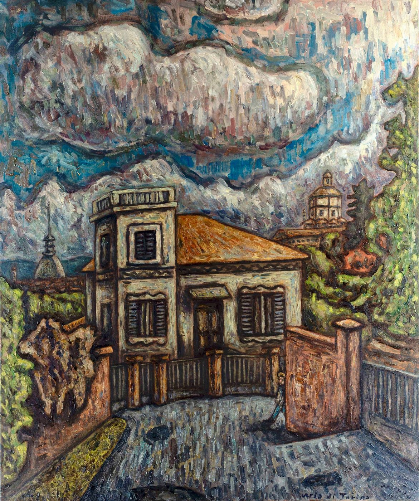

Viewer
Close-up
Oil paint cannot be seen in a reproduction that fits on a single screen — it reveals itself only when you come close enough to tell a palette-knife stroke from a brushstroke. This page opens the work at full size and lets you come that close, as if you were standing before the canvas in the studio.
Artwork viewer
Aria di Torino
- First tile
- —
- Loaded
- 0
- Level
- 0 / 2
- Scale
- 100%
Scroll wheel or pinch to zoom · drag to move · double-click to zoom in · keyboard: arrow keys, + − 0
The tiled viewer needs JavaScript. Without it you see the whole painting in one piece — the composition, but not the brushwork.

Prepared works
More works in close-up
Tiles have been made for all thirteen works, from full-resolution photographs. Each new work gets its tiles with a single command and appears here straight away.
How it works
Three levels, and only what you can see
An ordinary image viewer does one of two bad things: it either sends a small image and stretches it until it turns blurry, or sends a huge one and keeps the visitor waiting. This one does neither.
01
An image cut in advance
The work is divided into small pieces — tiles — at three levels of magnification. The overview level is a single tile, the middle level four and the closest sixteen. The cutting is done once, before the site goes online, so the browser has nothing to calculate.
02
Only what is visible is loaded
When you move in on a corner of the canvas, only that corner arrives. The other fifteen tiles of that level do not travel over the network until they come into view. That is why the first view takes a single request, not the whole image.
03
The coarser level waits underneath
When the zoom crosses a threshold and a sharper level is needed, the previous one stays underneath until the new tiles are in place. So the image never goes blank and never flickers — it simply sharpens.
The meter in the corner
The figures above the image are not decoration. First tile is the time from opening the page to the first pixel of the work on screen — the only figure a visitor actually feels. Loaded shows how many tiles have arrived so far out of the total; if that number stays low while you look at a single detail, the viewer is doing its job.
Museum viewers (IIIF, Deep Zoom) use the same principle for gigapixel captures of paintings. Here the tiles are cut from a full-resolution photograph of the work, so the closest level shows the image pixel for pixel — as many strokes as the photograph caught. When a higher-resolution capture arrives, only one more level is added; the viewer stays the same.